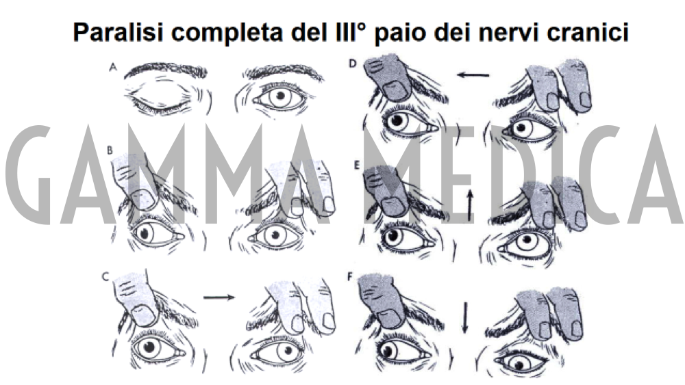

Gli occhi sono l’organo principale che è alla base del sistema visivo che consente la conoscenza del mondo che ci circonda e con il quale siamo in relazione. La vista può però essere compromessa per diverse cause ed una di queste è lo strabismo.
Cos’è lo strabismo?
Lo strabismo è un deficit muscolare per il quale la vista non è orientata in maniera sincrona. Questa disfunzione può presentarsi sia in età infantile, sia in età adulta tra le complicazioni di un’altra patologia del sistema visivo.
Di fatto lo strabismo impedisce il sincronismo tra i due occhi alterando la visione binoculare.
Cos’è la visione binoculare?
In condizioni normali, entrambi gli occhi contribuiscono all’allineamento degli occhi in misura uguale. La parte del cervello collegata al sistema visivo fonde le due immagini in una sola a tre dimensioni.
In presenza di strabismo, quando uno o entrambi gli occhi non sono ben allineati, il cervello riceve due immagini differenti e risponde ignorandone una. Uno degli occhi risulta, quindi, dotato di capacità visiva limitata, il cosiddetto occhio pigro o ambliope.
Cause dello strabismo:
- Ereditarietà
- Deficit dei muscoli dell’occhio o problemi al nervo ottico che influiscono sui muscoli
- Diminuzione della vista offuscata dovuta a cataratta, cicatrici della cornea, glaucoma, difetti ci vista (miopia, ipermetropia, astigmatismo), malattie della tiroide, distacco di retina, tumori dell’occhio
- Retinopatia del prematuro (ROP)
- Traumi oculare e orbitati
- Malattie congenite (sindrome di Down e paralisi cerebrale)
- Tumori o alterazioni della circolazione cerebrale
Sintomi dello strabismo
- Gli occhi non guardano nella stessa direzione nello stesso momento
- Gli occhi non si muovono in maniera sincrona
- Distorsione o chiusura di un occhio alla luce del sole
- Anomalie della posizione della testa o del collo
- Anomalie della postura
- Urti frequenti (mancanza di percezione della profondità)
Nei bambini possono presentarsi anche:
- Diminuzione della vista
- Facile stancabilità nell’applicazione visiva
- Aumentata sensibilità alla luce (fotofobia)
- Diplopia (quando lo strabismo si è sviluppato)
Tipi di strabismo
In base alle modalità di presentazione, lo strabismo può essere classificato nelle seguenti tipologie:
- Strabismo conclamato: è la condizione per la quale gli occhi si presentano disallineati costantemente
- Strabismo latente: si evidenzia solo dopo stress visivo o sollecitazioni con test diagnostici durante la visita ortottica
- Strabismo intermittente: lo strabismo si presenta con ambedue le modalità precedenti in maniera alternata
- Exotropia: uno o entrambi gli occhi si direzionano verso l’esterno
- Esotropia: uno degli occhi è orientato eccessivamente all’interno dell’orbita (verso la radice del naso)
- Strabismo accomodativo: la disfunzione è legata a un difetto visivo che se corretto può migliorare la condizione di disallineamento
Conseguenze dello strabismo:
- Sviluppo dell’ambliopia (occhio pigro)
- Perdita della percezione della profondità
- Riduzione del campo visivo
- Deficit del normale sviluppo del bambino
- Difficoltà nella coordinazione mano-oggetto
- Limiti nell’attività lavorativa
Complicazioni dello strabismo:
- Ambliopia: Comunemente conosciuta come “occhio pigro”, questa disfunzione comporta la riduzione della vista che si manifesta in entrambi gli occhi o ne colpisce solo uno. Il cervello ignora l’immagine inviata dall’occhio deviato e questo porta ad un deficit permanente della vista in quell’occhio
- Perdita della visione binoculare: Il paziente non può usare entrambi gli occhi, le immagini ricevute dal cervello da parte di questi ultimi non possono essere fuse in una. Si tratta, quindi, della perdita dell’utilizzo degli occhi nello stesso momento (visione binoculare)
Obiettivi del trattamento dello strabismo:
- Preservare/Ristabilire la normale visione
- Rafforzare la vista
- Acquisire la visione binoculare
- Migliorare la percezione visiva
Diagnosi dello strabismo:
- Esame accurato della vista
- Visita ortottica
- Esami diagnostici (campo visivo/schermo di Hess-Lancaster)
Trattamento dello strabismo:
Si può procedere al trattamento dello strabismo solo in seguito alla diagnosi della patologia, specialmente se la patologia è presente in età pediatrica. Un intervento precoce aumenta le possibilità di correggere la vista e sviluppare una normale visione.
Il trattamento include:
- Occhiali: In caso di leggero disallineamento, indossare degli occhiali speciali per aiutare a correggere il difetto e a migliorare la vista
- Bendaggio oculare: Se è presente ambliopia, l’occhio che vede di più viene penalizzato con una benda per sollecitare il paziente ad utilizzare l’occhio che vede meno. E’ consigliabile seguire un programma di riabilitazione ortottica per ottenere più velocemente i risultati sperati
- Esercizi per la vista: Gli esercizi per la vista, combinati ad altri trattamenti, aiutano a conseguire gli effetti desiderati
- Chirurgia: Nel corso di un intervento chirurgico, i muscoli extraoculari vengono sempre sottoposti a un cambiamento di posizione o a un accorciamento per riequilibrare sia la loro forza che il loro movimento per determinare un corretto allineamento
Si può ricorrere alla chirurgia a partire dai tre mesi di età, a seconda dei casi anche se la maggior parte dei pazienti vengono operati dopo i 6 anni. L’intervento può essere eseguito anche in età adulta.
Vantaggi della chirurgia
- Miglioramento della vista e della percezione della profondità
- Eliminazione della diplopia (visione doppia)
- Aumento dell’area del campo visivo
- Minor affaticamento visivo
- Prevenzione dall’occhio pigro
- Vantaggi estetici e incremento dell’autostima
FAQ sullo strabismo
Lo strabismo può essere ereditario?
Si, alcuni tipi di strabismo sono ereditari
Quali soggetti sono colpiti dallo strabismo?
I bambini che hanno meno di sei anni di età sono tra i soggetti più colpiti ma lo strabismo può manifestarsi anche in età giovanile (10-20 anni). Inoltre, sempre più frequentemente, questa disfunzione si presenta anche in età adulta spesso quale conseguenza di un trauma, di una paralisi, di un tumore, di ipertiroidismo o di altre malattie cardio-vascolari quali il diabete e l’ipertensione
Lo strabismo scompare/diminuisce da sé o sono necessari esercizi specifici?
No. Questo è un presupposto sbagliato che hanno in molti. Infatti, le condizioni della vista possono peggiorare se non ci si sottopone ad un trattamento finalizzato
Qual è il periodo giusto per il trattamento dello strabismo?
È sempre meglio trattare al più presto questa patologia. Se un occhio presenta una visione anormale, questa può essere corretta con un programma di riabilitazione ortottica
Qual è il periodo adatto per ricorrere alla chirurgia?
Dipende da caso a caso, in genere si preferisce prima la riabilitazione visiva e quindi sottoporre il paziente all’intervento chirurgico intorno ai 6 anni di età. I bambini vengono operati in anestesia generale mentre per gli adulti è possibile utilizzare l’anestesia locale senza ricovero
Quanto dura un intervento di strabismo
L’intervento dura da ½ ora a 1 ora e possono essere operati nella stessa seduta ambedue gli occhi
Dopo quanto tempo è possibile tornare a lavorare in seguito all’intervento?
Generalmente dopo 3-4 giorni. L’occhio sarà leggermente arrossato con lacrimazione ma si può tornare tranquillamente all’attività lavorativa.
Fissa un appuntamento
SCARICA IL CONSENSO INFORMATO SOI >


{kind=link}